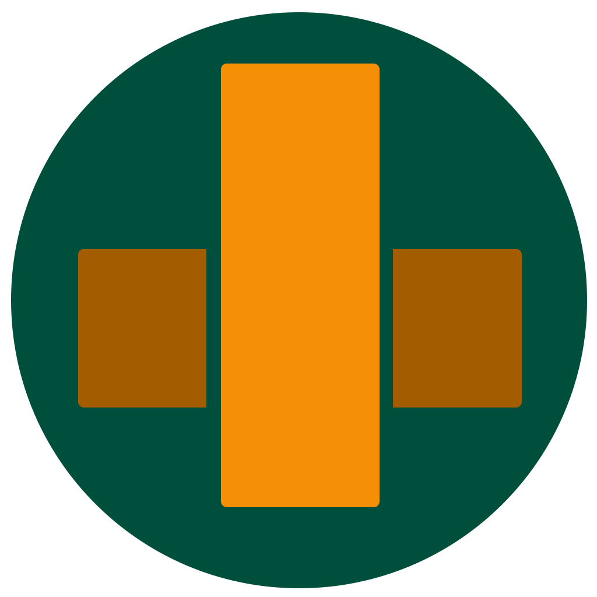

The biggest innovation since the creation of Bitcoin may very well be MimbleWimble, a project introduced anonymously, and proven to have sparked interest with popular altcoins like Grin, Beam, and MimbleWimbleCoin.
Bitcoin MimbleWimble is a coin that combines the best of the forked MW projects in to one master MimbleWimble coin that can provide a true sustainable future for MimbleWimble, sharing the growth qualities of Bitcoin.
GRIN - 10 BMW for every 1 GRIN
BEAM - 10 BMW for every 1 BEAM
MWC - 5 BMW for every 1 MWC
BITGRIN - 3 BMW for every 1 BITGRIN
EPIC CASH - 1 BMW for every 1 EPIC CASH
GRIMM - 1 BMW for every 1 GRIMM
BMW uses it's own original codebase written completely from scratch, with learnings from the BEAM and GRIN codebases.
BMW is based on Proof of Work, utilizing the XBS algorithm, allowing users to mine coins while contributing to the network. Unlike other MW implementations, BMW is not susceptible to 51% attacks by large miners. The XBS algorithm uses a novel approach to double spending attacks, but requiring proof of work upon reorganization that is only possible for a distributed effort of legitimate actors on the network.
BMW supports a transaction model inspired by Bitcoin, making it simple to support addresses and simple offline send-and-forget transactions.
Join the Telegram and share how you can participate in the BMW effort. We are happy to invite those from the forked coins, as well as those new to MimbleWimble with open arms.